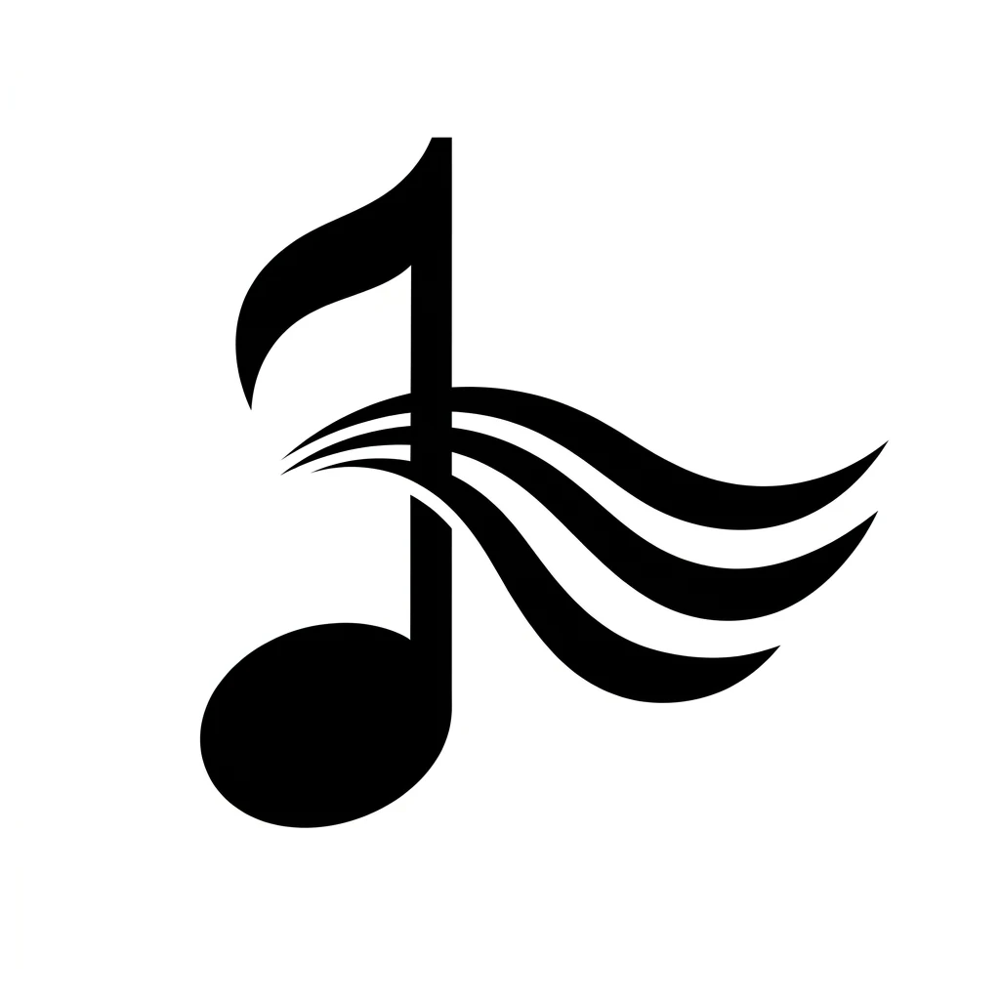

图标与名字，放在一起看
Windows 改版 · 品牌候选

流音
LIU YIN MUSIC
让喜欢的旋律，流进日常。
原图缩小后
仅缩小显示，原图片未修改
16 px · 小图标
24 px · 导航
32 px · 任务栏
48 px · 桌面
64 px · 大图标
小尺寸下左侧细线会挤在一起；安装图标建议保留音符与飘带主体，另做简化版。
应用里的标识
桌面快捷方式
流音
我的音乐
流音流动的旋律，最贴合飘带造型
音栖音乐有个归处，偏安静与陪伴
听岚像风一样听见音乐，偏诗意